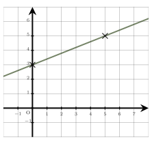
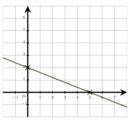

Séance 29 — Proportions et équations
Pour le petit déjeuner, Joachim a acheté des brioches et des croissants.
Il a acheté $2$ fois plus de croissants que de brioches.
Le prix d’un croissant est $1,3$,\euro~et celui d’une brioche est $2,7$,\euro.
Il a payé au total $10,6$,\euro.
On désigne par $x$ le nombre de brioches achetées.
Parmi les équations suivantes, une seule modélise la situation. Laquelle ?
A.
$x+2,6=10,6$
B.
$2,7x+2,6x=10,6$
C.
$2x+x=10,6$
D.
$2x \times 1,3 + 2,7=10,6$
Nombre de brioches : $x$
Nombre de croissants : $2x$
Prix des brioches : $x \times 2,7 = 2,7x$
Prix des croissants : $2x \times 1,3 = 2,6x$
L’équation qui modélise la situation est $**2,**7x+2,6x=10,6$.
La bonne réponse est la réponse B.
Voici deux séries de valeurs :
série A : $~~14~~; ~~1~~; ~~6~~$.
série B : $~~4~~; ~~12~~; ~~6~~$.
Laquelle des ces 4 propositions est vraie ?
A.
Les deux séries ont la même médiane mais pas la même moyenne.
On calcule la moyenne de la série A :
$\overlinex_A=\dfrac1 + 6 + 143 = \dfrac213$ $= 7$
et sa médiane, qui est la valeur centrale de la série classée : $\mathrmm_A=6$ .
On calcule la moyenne de la série B :$\overlinex_B=\dfrac4 + 6 + 123 = \dfrac223 $
et sa médiane, qui est aussi la valeur centrale de la série classée : $\mathrmm_B=6$ .
On constate que les deux séries ont la même médiane mais pas la même moyenne.
La bonne réponse est la réponse D.
On interroge un groupe de $500$ personnes sur leurs habitudes sportives. Les réponses sont consignées dans le tableau ci-dessous :
$\renewcommand\arraystretch1
\beginarray|c|c|c|c|
\hline
\cellcolorlightgray & \cellcolorlightgray \textPratique un sport & \cellcolorlightgray \textNe pratique pas de sport & \cellcolorlightgray \textTotal
\hline
\cellcolorlightgray \textMoins de 25 ans & 80 & 40 & 120
\hline
\cellcolorlightgray \textEntre 25 et 45 ans & 90 & 70 & 160
\hline
\cellcolorlightgray \textPlus de 45 ans & 100 & 120 & 220
\hline
\cellcolorlightgray \textTotal & 270 & 230 & 500
\hline
\endarray
\renewcommand\arraystretch1$
On choisit une personne de ce groupe au hasard et on définit les événements suivants : $S$ \og la personne pratique un sport », $A_1$ \og la personne a moins de 25 ans », $A_2$ \og la personne a entre 25 et 45 ans » et $A_3$ \og la personne a plus de 45 ans ».
$P(A_1)$ est égal à :
A.
$\dfrac625$
B.
$\dfrac310$
C.
$\dfrac320$
D.
$\dfrac1120$
L’événement $A_1$ correspond à la ligne \og Moins de 25 ans ».
Il y a $120$ personnes dans cette catégorie sur un total de $500$ personnes.
Donc : $P(A_1)=\dfrac120500=**\dfrac6**25$.
La bonne réponse est la réponse A.
Dans un repère du plan, on a représenté une droite $(D)$.
L’ordonnée du point de $(D)$ dont l’abscisse est $80$ est :

A.
$32$
B.
$-29$
C.
$35$
D.
$203$
On commence par déterminer l’équation réduite de la droite $(D)$.
Son coefficient directeur est $\dfrac25$ et son ordonnée à l’origine est $3$.
L’équation réduite de $(D)$ est : $y=\dfrac25x+3$.
L’ordonnée du point de $(D)$ d’abscisse $80$ est donnée par : $y=\dfrac25\times 80+3$,
ce qui donne $y=\dfrac1605+3=\dfrac1755=\dfrac35**\times5** 1**\times5**=35$.
L’ordonnée du point de $(D)$ d’abscisse $80$ est $**35**$.
La bonne réponse est la réponse C.
L’épaisseur d’une feuille de papier est égale à $8 \times 10^-2$ mm.
L’épaisseur d’une pile de $1\,000$ feuilles est égale à :
A.
$80\text cm$
B.
$0,8\text cm$
C.
$800\text mm$
D.
$80\text mm$
L’épaisseur d’une feuille est $8 \times 10^-2$ mm.
Pour $1\,000$ feuilles, il faut multiplier par $1\,000$.
L’épaisseur de la pile en $**mm**$ est donc :
$\beginaligned8 \times 1\,000 \times 10^-2&=8\,000 \times 10^-2
&=8 \times 10^1
&=80\endaligned$
L’épaisseur de la pile est donc de $**80 ** mm****$.
La bonne réponse est la réponse D.
La solution de l’équation $(9x-1)-(3x+5)=0$ est :
A.
$-\dfrac23$
B.
$-\dfrac53$
C.
$1$
D.
$\dfrac19$
On se ramène à une équation du type $ax=b$ en isolant les \og $x$ » dans le membre de gauche et les \og non $x$ » dans le membre de droite.
$\beginaligned
(9x-1)-(3x+5)&=0
9x-1-3x-5&=0
6x-6&=0
6x&=6
x&= 1
\endaligned$
La solution de cette équation est $**1**$.
La bonne réponse est la réponse C.
Devoirs — Séance 29 — Proportions et équations
Pour le petit déjeuner, Nicolas a acheté $4$ brioches et $7$ croissants.
Le prix d’une brioche est $30$ centimes plus cher que celui d’un croissant.
Il a payé au total $14,4$,\euro.
On désigne par $x$ le prix d’un croissant.
Parmi les équations suivantes, une seule modélise la situation. Laquelle ?
A.
$11x+0,3=14,4$
B.
$11x+1,2=14,4$
C.
$4(x+0,3)+7=14,4$
D.
$4x+7(x+0,3)=14,4$
Voici deux séries de valeurs :
série A : $~~2~~; ~~5~~; ~~7~~$.
série B : $~~2,5~~; ~~6~~; ~~5,5~~$.
Laquelle des ces 4 propositions est vraie ?
A.
Les deux séries n’ont ni la même moyenne, ni la même médiane.
On interroge un groupe de $500$ personnes sur leurs habitudes sportives. Les réponses sont consignées dans le tableau ci-dessous :
$\renewcommand\arraystretch1
\beginarray|c|c|c|c|
\hline
\cellcolorlightgray & \cellcolorlightgray \textPratique un sport & \cellcolorlightgray \textNe pratique pas de sport & \cellcolorlightgray \textTotal
\hline
\cellcolorlightgray \textMoins de 25 ans & 80 & 40 & 120
\hline
\cellcolorlightgray \textEntre 25 et 45 ans & 90 & 70 & 160
\hline
\cellcolorlightgray \textPlus de 45 ans & 100 & 120 & 220
\hline
\cellcolorlightgray \textTotal & 270 & 230 & 500
\hline
\endarray
\renewcommand\arraystretch1$
On choisit une personne de ce groupe au hasard et on définit les événements suivants : $S$ \og la personne pratique un sport », $A_1$ \og la personne a moins de 25 ans », $A_2$ \og la personne a entre 25 et 45 ans » et $A_3$ \og la personne a plus de 45 ans ».
$P(A_3)$ est égal à :
A.
$\dfrac1125$
B.
$\dfrac14$
C.
$\dfrac310$
D.
$\dfrac1120$
Dans un repère du plan, on a représenté une droite $(D)$.
L’ordonnée du point de $(D)$ dont l’abscisse est $-60$ est :

A.
$26$
B.
$-22$
C.
$24$
D.
$152$
L’épaisseur d’une feuille de papier est égale à $80 \times 10^-3$ mm.
L’épaisseur d’une pile de $1\,000$ feuilles est égale à :
A.
$0,8\text cm$
B.
$800\text mm$
C.
$800\text cm$
D.
$80\text mm$
La solution de l’équation $(10x+7)-(3x-3)=0$ est :
A.
$1$
B.
$-\dfrac107$
C.
$-\dfrac710$
D.
$-\dfrac47$